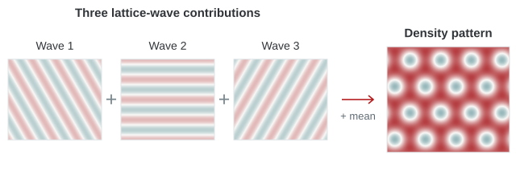
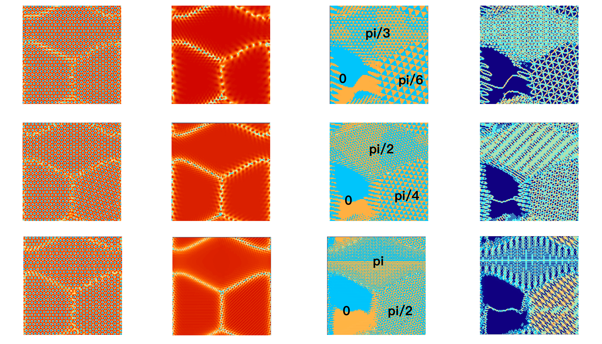
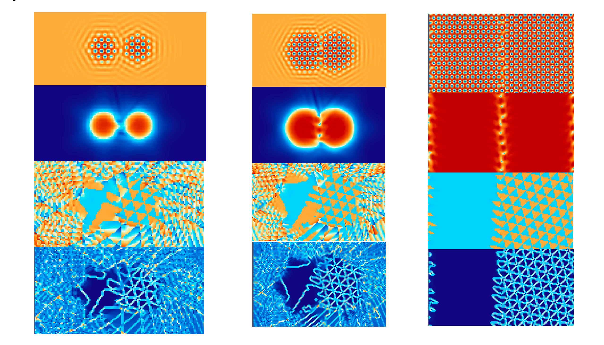
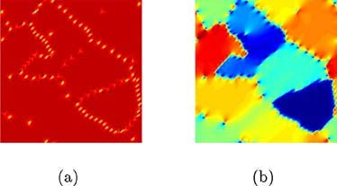
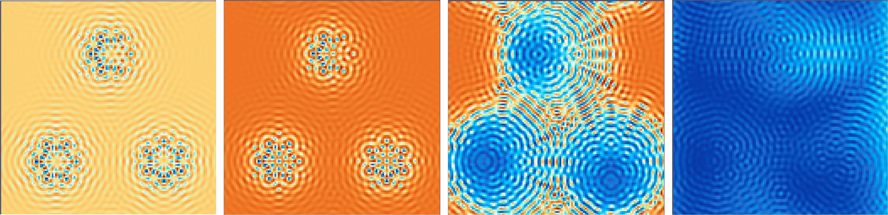

In the three-amplitude form of the amplitude phase-field crystal (APFC) model, three lattice waves have amplitudes and phases that vary across the crystal; together they reconstruct its density pattern. I implemented CPU (FFTW) and GPU (CUDA/cuFFT) solvers for this model, using semi-implicit updates in Fourier space.



Complex amplitudes reconstruct around its mean . Vectors define lattice waves, is the Fourier wavevector, and controls ordering. Distinct indices label the three amplitudes; hats indicate Fourier transforms and stars complex conjugation.
My implementation and checks
I set seed orientations through the amplitude phases and used a smooth tanh taper at the seed edges. I checked density, amplitude, phase, and phase gradients together. Phase wraps periodically, so the gradient views can contain artifacts from the representation.


This literature example shows nearly uniform amplitude magnitudes and phase gradients inside grains, with stronger changes near their boundaries.

An early idea for adaptivity
Work on adaptive mesh refinement (AMR) helped motivate my early exploration of dynamic block activation (DBA) for APFC. I wanted to focus updates around evolving interfaces and defects while keeping a regular grid.

An early initialization problem
Early simulations sometimes produced distorted crystal patterns. I compared seed-edge smoothing and different ways of initializing the third amplitude, then set its initial phase from the first two.

Model background · Goldenfeld, Athreya & Dantzig (2006) · Athreya et al. (2007) · Berčič & Kugler (2018).